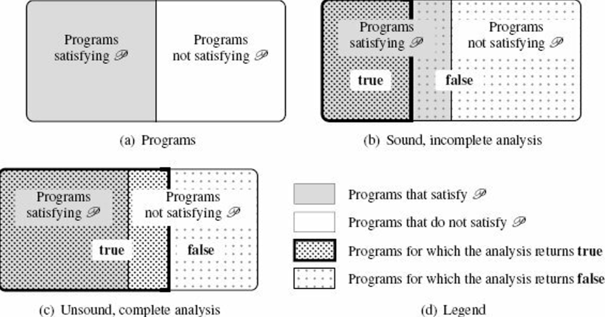
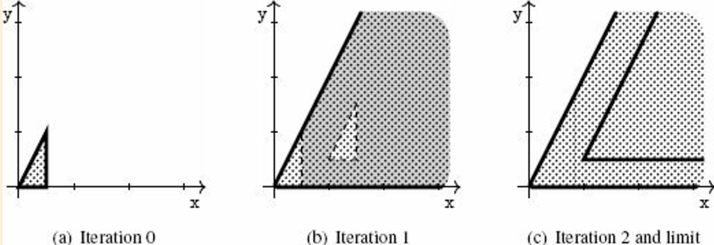
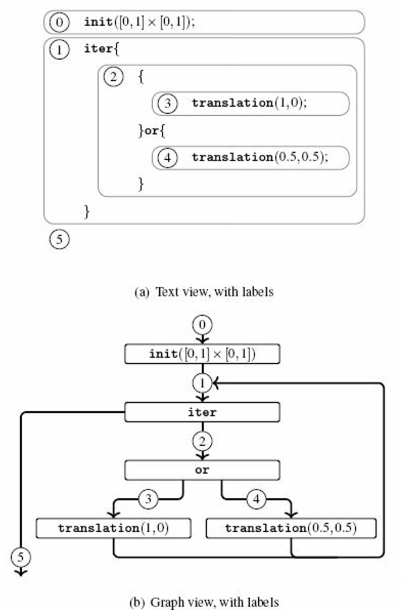

This is a random note I took while reading "Introduction to Static Analyis – An Abstract Interpretation Perspective", by Xavier Rival and Kwangkeun Yi.
1 Program Analysis
1.3 Concepts in Program Analysis
1.3.2 Static versus Dynamic
Motivations for static analysis
"before-use" analysis
analysis of a program that might be never terminating
1.3.3 A Hard Limit: Uncomputability
halt such that, p ∈ ğ™», halt(p) = true if and only if p terminatesp ∈ ğ™», it returns true if and only if p satisfies the semantic property ğ’«.So how to design a program analysis ?
target a restricted class of programs: give up the "for every program
p" partnot always being able to provide an exact answer: give up the "if and only if" part
1.3.5 Approximation: Soundness and Completeness
Let analysis to be an analysis tool to determine whether this property holds:
p ∈ ğ™», analysis(p) = true ⇔ p satisfies ğ’«.p ∈ ğ™», analysis(p) = true ⇒ p satisfies ğ’«.for every program
p ∈ ğ™», analysis(p) = true ⇠p satisfies ğ’«.Soundness
A sound program analysis satisfies the first implication.
analysis is sound with respect to property ğ’« whenever, for any program p ∈ ğ™», analysis(p) = true implies that p satisfies property ğ’«.A sound analysis will reject all programs that do not satisfy ğ’«.
good: well-typed programs will not present certain classes of errors
bad: certain programs that will never crash may still be rejected
The soundness is easy to meet; we can simply reject any program. Therefore, in practice, the design of a sound analysis will try to give a conclusive answer as often as possible.
Completeness
analysis is complete with respect to property ğ’« whenever, for every program p ∈ ğ™», such that p satisfies ğ’«, analysis(p) = true.The completeness is also easy to meet; we can simply never reject any program. To be useful, a complete analyzer should often reject programs that don't satisfy the property of interest.
Soundness vs. Completeness

When a program analysis is automatic, it is either unsound or incomplete.
1.4 Families of Program Analysis Techniques
Testing: check a finite set of finite program executions
unsound and complete
good: easy, very close to the actual runtime
bad: may not terminate, may not be deterministic (e.g. concurrent programs), not feasible to fully observe all executions
xref: concolic testing to improve coverage and accuracy
Assisted Proof: rely on user-supplied invariants
2 basic approaches:
good: often sound to respect to the model of the program semantics used for the proof, also complete up to the abilities of the proof assistant to verify proofs
bad: non-automated, requires significant time and expertise
(Finite-State) Model Checking: exhaustive exploration of finite systems
use some kind of exhaustive (but efficient) enumeration and determine whether all executions satisfy the property of interest
good: automatic, sound and complete with respect to the model
caveat: verification is performed at the model level and not at the program level
a model of the program needs to be constructed (manually or by some automatic frontend means)
=> the checking of the synthesized model may be either incomplete or unsound, with respect to the input program (incompleteness or unsoundness is often introduced in the modeling stage)
often conservative: sound and incomplete with respect to the input program
Conservative Static Analysis: automatic, sound, and incomplete approach
idea: finitely over-approximate the set of all program behaviors using a specific set of properties
many existing trials
often sound and incomplete
we can think of unsound and complete static analysis
will answer very different kind of question
may guarantee that a given subset of the executions of the program can be observed, while it doesn't prove properties such as the absence of run-time errors
bug finding: Relaxed error search, automatic, unsound, incomplete, based on heuristics
simplify the design and implementation of analysis tools and to provide lighter-weight verification algorithms
can be used to improve the quality of non-critical programs at a low cost
examples:
automatic | soundness | completeness | object | when | |
|---|---|---|---|---|---|
testing | No | No | Yes | Program | Dynamic |
Assisted Proof | No | Yes | Yes/No | Model | Static |
Model Checking of finite-state model | Yes | Yes | Yes | Finite Model | Static |
Model Checking at program level | Yes | Yes | No | Program | Static |
Conservative Static Analysis | Yes | Yes | No | Program | Static |
bug finding | Yes | No | No | Program | Static |
2 A Gentle Introduction to Static Analysis
2.2 Abstraction
Realistic application for C programs:
where it dereference a null pointer
where it writes over a dangling pointer
Abstraction is not unique – some abstractions yield simpler computer representations and less costly algorithms than others:
We say that is the best abstraction of the concrete set if and only if
, and
for any that is an abstraction of (i.e., ), then is a coarser abstraction than
If has a best abstraction, then the best abstraction is unique. When it is defined, we let α denote the function that maps any concrete set of states into the best abstraction of that set of states.
The best abstraction may not be available. But the impossibility to define or compute the best abstraction is in no way a serious flow for the analysis, as it just lead to conservative but sound results.
Think of the "reachability" semantic property of a program that acts on 2D space:
abstraction | idea | |
|---|---|---|
intervals abstraction | the abstract elements of the interval abstract are defined by constraints of the form |
|
convex polyhedra abstraction | the abstract elements of the convex polyhedra abstract domain are conjunctions of linear inequality constraints, e.g. |
|
2.3 A Computable Abstract Semantics: Compositional Style
A compositional approach to static analysis: to analyze a sequence of commands, "composes" the analyses of each sub-command
2.3.1 Abstraction of Initialization
2.3.2 Abstraction of Post-Conditions
abstract pre-condition: an abstraction of the states that can be observed before a program fragment
abstract post-condition: an abstraction of the states that can be observed after that program fragment
transfer function: an abstract operation that accounts for the effect of a basic program statement
analysis that inputs a program and an abstract pre-condition and returns an abstract post-condition. We say that analysis is sound if and only if the following condition holds: p from a state (x, y) generates that state (x′, y′),then for all abstract element such that (
x, y) ∈ γ(),(
x′, y′) ∈ γ(analysis(p, ))The definition above entails that:
the analysis will produce sound results in the sense of the soundness definition when considering the property ğ’« of interest. Since the analysis over-approximates the states the program may reach, if it claims that ğ’« is not reachable, then we are sure that the program cannot reach ğ’«.
the analysis is not complete in the sense of the soundness definition, since it accepts analyses that produce coarse over-approximations
2.3.3 Abstract of Non-Deterministic Choice
Abstract interpretation will produce an over-approximation of both cases, as the union of two sets of abstract elements.
2.3.4 Abstraction of Non-Deterministic Iteration
setup:
program
pconsists of a loop with bodyb:piter{ b }: program that iterates
btimes: program that iterates
bat most timesimplies: is equivalent to or
idea: recursively applies analysis
analysis converges if
Rstabilizes
approach: force the number of abstract elements to decrease over iteration
widening: over-approximatesunions, enforces convergenceinclusion: inputs abstract elements and returns true only when it can prove that
Algorithm:
R ↠a;
repeat
T ← R;
R ↠widen(R, analysis(p, R));
until inclusion(R, T)
return T;Widening is another source of potential incompleteness, but fortunately there are many techniques to make the analysis of loops more precise.
To unroll the first iteration of the loop into the union of {{}; b} can ease the effect of the succeeding widenings.
program that acts on 2D space | abstract iteration | |
|---|---|---|
original | |  |
loop unrolled | |
|

2.3.5 Verification of the Property of Interest
The analysis discussed so far actually computes as intermediate results over-approximations for all the interesting states of the input program.
2.4 A Computable Abstract Semantics: Transitional Style
Idea: compute, from the outset, all occurring intermediate states
2.4.1 Semantics as State Transitions
The goal of the analysis: to collect all the states occurring in all possible transition sequences of the input program.
program: a collection of statements with a well defined execution order
program counter (program point): a unique label assigned to each statement of the program
control flow: the execution order, specified by a relation between the labels (from current program points to next program points)
